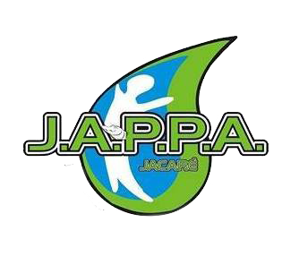

Afinidades e Entidades
Álbum
Assuntos e Artigos
Atas e Memórias
Diversão
Estatuto
Mapa Situacional
Projeto JAPPA
Vídeos
Vista essa ideia

Home
Quem Somos
Fale Conosco
Filiação
Informações e Apresentações
Data de disponiblidade no site
Descrição
10/05/21
Aniversário de 14 anos da JAPPA
15/07/20
Boletim de Atendimentos elaborado pla GM Ambiental - Jan a Maio
12/07/20
Capa do Gibi da JAPPA que será distribuído GRATUITAMENTE as crianças do Ensino Fundamental
12/07/20
Moção de Congratulações - Câmara Municipal de Itatiba - 18/05/20
05/09/18
Cartilha "Meu Ecoponto" - Guia do Usuário
09/03/16
Eu, Morcego I - Edison Guidi
09/03/16
Eu, Morcego II - Edison Guidi
06/07/15
Termo de Parceria - Arborização Urbana
15/10/14
Resumo ACP - Sistema Cantareira
15/10/14
ACP Volume Morto - Petição Inicial
02/07/14
Quem Nos Salvará de Quem Nos Devia Proteger?
07/01/14
Água - de novo para que não se torne nunca
22/05/13
Palestra feita para alunos da USF Campinas (Engenharia Ambiental e Sanitária)
29/08/12
Relatório suscinto de visita realizada à cidade Extrema-MG ao Projeto "Conservadores de Água" - 13/08/2012.
23/11/11
Empresas e status de interligação ao SES de Itatiba
17/09/11
Coletores - Emissários (utilização) - matéria publicada no Jornal BOM DIA, edição de 15/09/2011
22/08/11
Ofício à CETESB - Auto Posto em APP
01/10/10
Intreresse Jurídico - Modelo
03/09/10
Ofício de repudio quanto ao rebaixamento da qualificação do Ribeirão Jacaré
03/09/10
Ofício - Aterro Sanitário
23/07/10
Declaração Universal dos Direitos da Água
15/09/09
Ações de Agosto de 2009
15/09/09
Ações de Janeiro a Julho de 2009
15/06/09
Moção de Congratulações - Câmara Municipal de Itatiba - 02/06/09
22/12/08
Prefeitura se retrata em informação sobre percentual de esgoto tratado em Itatiba
10/12/08
Ofício CETESB ref. Licença de Operação - COVOLAN - 10/12/2008
03/11/08
CETESB - Carta de Solicitação
03/11/08
Mar afetado
03/11/08
A água na história
03/11/08
Controladores de poluição
03/11/08
Sacos Plásticos